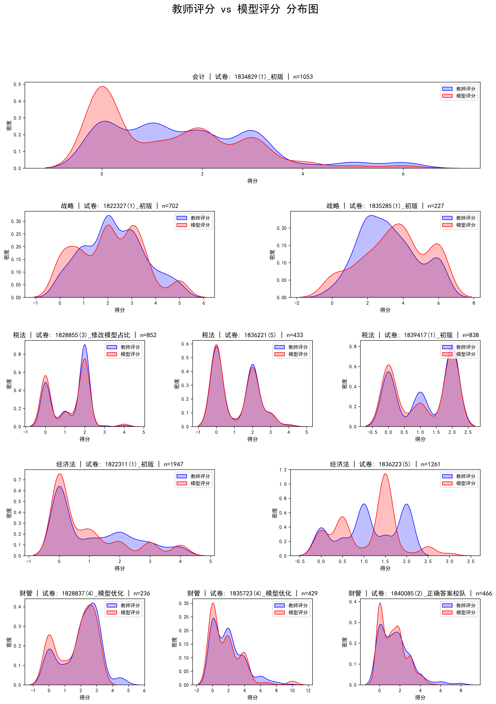

主观题评分误差分析报告
本报告汇总了模型评分与教师评分在多个维度下的误差统计分析，包括不同试卷、题型、分值下的分布可视化和一致性对比。
试卷基本情况描述统计
下面是关于各科目各试卷从小题和大题两个层面下一些基本情况的统计。
小题层面
| 科目名称 | 试卷ID | 数据量 | 题目数量 | 题目平均分值 | 题目最高分值 | 题目最低分值 |
|---|
| 会计 | 1834829(1)_初版 | 1053 | 13 | 3.077 | 6 | 1 |
| 战略 | 1822327(1)_初版 | 702 | 17 | 2.941 | 5 | 1 |
| 1835285(1)_初版 | 227 | 9 | 4.444 | 6 | 2 |
| 税法 | 1828855(3)_修改模型占比 | 852 | 19 | 2.105 | 4 | 2 |
| 1836221(5) | 433 | 17 | 2.353 | 4 | 2 |
| 经济法 | 1822311(1)_初版 | 1947 | 21 | 2.381 | 4 | 1 |
| 1836223(4) | 1120 | 24 | 1.667 | 2 | 1 |
| 1836223(千问) | 1120 | 24 | 1.667 | 2 | 1 |
| 财管 | 1828837(4)_模型优化 | 236 | 12 | 3 | 4.5 | 2 |
| 1835723(3)_表格分析+模型优化 | 389 | 9 | 4.889 | 10 | 2 |
大题层面
| 科目名称 | 试卷ID | 数据量 | 题目数量 | 题目平均分值 | 题目最高分值 | 题目最低分值 |
|---|
| 会计 | 1834829(1)_初版 | 264 | 3 | 7.6 | 16 | 1 |
| 战略 | 1822327(1)_初版 | 216 | 5 | 11.364 | 24 | 2 |
| 1835285(1)_初版 | 105 | 4 | 7 | 10 | 3 |
| 税法 | 1828855(3)_修改模型占比 | 184 | 4 | 8.182 | 12 | 4 |
| 1836221(5) | 80 | 3 | 10.227 | 20 | 2.5 |
| 经济法 | 1822311(1)_初版 | 388 | 4 | 6.875 | 15 | 1 |
| 1836223(4) | 190 | 4 | 7.455 | 10 | 1 |
| 1836223(千问) | 190 | 4 | 7.455 | 10 | 1 |
| 财管 | 1828837(4)_模型优化 | 86 | 4 | 6.812 | 9 | 3 |
| 1835723(3)_表格分析+模型优化 | 183 | 4 | 9 | 14 | 4 |
试卷整体误差描述统计
下面表格是从小题和大题（如果多个小题同属于一个大题，大题的模型打分和老师打分为对应小题分数之和）两个层面统计的关于老师打分和模型打分之间分差的描述统计量
小题层面
| 科目名称 | 试卷ID | 平均误差 | 误差中位数 | 误差标准差 | 最小误差 | 最大误差 | 误差绝对值均值 | 25%分位数 | 75%分位数 | 95%分位数 |
|---|
| 会计 | 1834829(1)_初版 | -0.389 | 0 | 0.936 | -5 | 2 | 0.568 | -1 | 0 | 1 |
| 战略 | 1822327(1)_初版 | -0.168 | 0 | 0.937 | -5 | 3 | 0.584 | -0.5 | 0.438 | 1 |
| 1835285(1)_初版 | 0.32 | 0 | 1.266 | -3.6 | 3.8 | 0.921 | 0 | 1 | 2 |
| 税法 | 1828855(3)_修改模型占比 | -0.099 | 0 | 0.658 | -4 | 4 | 0.3 | 0 | 0 | 1 |
| 1836221(5) | -0.022 | 0 | 0.475 | -3 | 4 | 0.117 | 0 | 0 | 0 |
| 经济法 | 1822311(1)_初版 | -0.234 | 0 | 1.098 | -4 | 4 | 0.593 | -0.5 | 0 | 1 |
| 1836223(4) | -0.084 | 0 | 0.617 | -2 | 2.5 | 0.453 | -0.5 | 0 | 1 |
| 1836223(千问) | 0.015 | 0 | 0.682 | -2 | 2.5 | 0.502 | -0.5 | 0.5 | 1.5 |
| 财管 | 1828837(4)_模型优化 | -0.288 | 0 | 0.932 | -4.5 | 2.5 | 0.494 | -0.5 | 0 | 1 |
| 1835723(3)_表格分析+模型优化 | -0.326 | 0 | 1.275 | -5.6 | 6 | 0.672 | -0.5 | 0 | 1.268 |
大题层面
| 科目名称 | 试卷ID | 平均误差 | 误差中位数 | 误差标准差 | 最小误差 | 最大误差 | 误差绝对值均值 | 25%分位数 | 75%分位数 | 95%分位数 |
|---|
| 会计 | 1834829(1)_初版 | -1.552 | -1 | 2.123 | -11.5 | 2.5 | 1.857 | -2.812 | 0 | 1 |
| 战略 | 1822327(1)_初版 | -0.546 | 0 | 2.188 | -11.19 | 4.76 | 1.353 | -1 | 0.5 | 1.74 |
| 1835285(1)_初版 | 0.692 | 0.5 | 1.984 | -4.12 | 5 | 1.629 | -0.5 | 2 | 3.74 |
| 税法 | 1828855(3)_修改模型占比 | -0.459 | 0 | 1.561 | -9 | 3.5 | 0.976 | -1 | 0 | 2 |
| 1836221(5) | -0.119 | 0 | 1.035 | -3 | 4 | 0.531 | 0 | 0 | 1.05 |
| 经济法 | 1822311(1)_初版 | -1.172 | 0 | 4.036 | -13.8 | 15 | 2.524 | -3 | 0 | 3.565 |
| 1836223(4) | -0.495 | -0.5 | 1.172 | -3.5 | 2.75 | 1.018 | -1.438 | 0.5 | 1.5 |
| 1836223(千问) | 0.087 | 0 | 1.448 | -3.5 | 3.75 | 1.16 | -1 | 1 | 2.5 |
| 财管 | 1828837(4)_模型优化 | -0.791 | -0.28 | 1.656 | -7.5 | 2.5 | 1.163 | -1.315 | 0 | 1 |
| 1835723(3)_表格分析+模型优化 | -0.692 | 0 | 2.047 | -10.5 | 6 | 1.311 | -1.7 | 0 | 2 |
判分准确性各项指标
下方表格呈现的是从多个角度统计的模型判分准确性指标，其中精准匹配1/2/3是根据一下三种规则得到一个误差合理值或者误差合理范围，然后统计的分差在对应误差范围内的数据占比。规则如下：
规则1：取题目最小得分点和该题目分值的10%两者之间的最小值；
规则2：分差的百分之95%分位数；
规则3：获取分差均值和标准差，计算均值正负一个标准差范围。
下方表格中呈现了两版数据的结果。一版是原始数据，一版是经过下述筛选条件对数据做清洗后的结果。
黑色代表两版数据准确率没有差异，红色代表清洗后数据的准确率下降，绿色代表清洗后数据的准确率上升。
筛选条件1：财管剔除题目类型为“表格”且模型判分为0的数据（可能是学生答案没填在表格里，没法判）；
筛选条件2：财管剔除某个表格题目（该题目的表格格式不固定，模型暂时判不准）；
筛选条件3：如果某个小题错误类型都是单位错误，暂时认定该题目模型打分和老师判分没分差；
筛选条件4：战略中有错误类型包含“正确答案已经全部匹配”字样，暂时认定该题目模型打分和老师判分没分差；
筛选条件5：模型判分结果超过题目原始分值的统一修改为原始分值（判分规则不一致）。
小题层面
| 科目名称 | 试卷ID | 完全匹配 | 模型偏低 | 模型偏高 | 精准匹配1 | 精准匹配2 | 精准匹配3 | 误差0.5内 | 误差0.8内 | 误差1内 | 误差分值5%内 | 误差分值10%内 | 误差分值15%内 |
|---|
| 会计 | 1834829(1)_初版 | 58.21% | 32.67% | 9.12% | 58.31% | 84.05% | 79.11% | 64.1% | 64.39% | 84.05% | 58.21% | 58.59% | 58.88% |
| 战略 | 1822327(1)_初版 | 39.17% （44.02%） | 31.77% | 29.06% （24.22%） | 47.29% （51.57%） | 83.05% （83.33%） | 78.21% （80.34%） | 67.81% （69.94%） | 72.22% （73.79%） | 83.05% （83.33%） | 41.45% （46.3%） | 47.01% （51.28%） | 54.7% （58.55%） |
| 1835285(1)_初版 | 31.72% （38.33%） | 22.47% | 45.81% （39.21%） | 37.44% （43.61%） | 91.63% （92.51%） | 70.48% （68.72%） | 43.17% （47.58%） | 44.93% （49.34%） | 70.48% （73.13%） | 34.36% （40.97%） | 37.0% （43.17%） | 40.53% （45.37%） |
| 税法 | 1828855(3)_修改模型占比 | 72.3% （76.64%） | 18.54% （14.44%） | 9.15% （8.92%） | 72.3% （76.64%） | 92.96% （93.19%） | 82.39% （82.75%） | 82.39% （82.75%） | 82.39% （82.75%） | 92.96% （93.19%） | 72.3% （76.64%） | 72.3% （76.64%） | 72.65% （76.88%） |
| 1836221(5) | 92.38% | 4.16% | 3.46% | 92.38% | 92.38% | 92.38% | 93.76% | 93.76% | 95.84% | 92.38% | 92.38% | 92.38% |
| 经济法 | 1822311(1)_初版 | 54.49% | 29.28% | 16.23% | 58.24% | 76.94% | 83.62% | 70.11% | 74.94% | 76.94% | 54.49% | 57.52% | 60.3% |
| 1836223(4) | 30.8% （44.55%） | 44.46% | 24.73% （10.98%） | 30.8% （44.55%） | 93.93% （92.41%） | 86.25% （82.32%） | 86.25% （92.41%） | 86.7% （92.59%） | 93.93% （97.5%） | 30.8% （44.55%） | 30.8% （44.55%） | 31.25% （45.0%） |
| 1836223(千问) | 28.3% （44.29%） | 38.84% | 32.86% （16.88%） | 28.3% （44.29%） | 97.41% （90.71%） | 81.79% （77.23%） | 81.79% （90.71%） | 82.5% （90.98%） | 91.34% （95.8%） | 28.3% （44.29%） | 28.3% （44.29%） | 28.66% （44.64%） |
| 财管 | 1828837(4)_模型优化 | 59.32% （60.09%） | 29.66% （28.76%） | 11.02% （11.16%） | 59.75% （60.52%） | 88.14% （89.27%） | 83.47% （83.69%） | 72.88% （73.82%） | 74.58% （75.54%） | 88.14% （89.27%） | 60.59% （61.37%） | 60.59% （61.37%） | 63.14% （63.95%） |
| 1835723(3)_表格分析+模型优化 | 55.78% （66.22%） | 28.28% （19.06%） | 15.94% （14.72%） | 63.24% （73.58%） | 80.21% （89.63%） | 77.38% （79.26%） | 67.35% （78.6%） | 68.89% （79.26%） | 79.43% （89.63%） | 61.95% （72.58%） | 70.44% （79.26%） | 74.81% （83.61%） |
大题层面
| 科目名称 | 试卷ID | 完全匹配 | 模型偏低 | 模型偏高 | 精准匹配1 | 精准匹配2 | 精准匹配3 | 误差0.5内 | 误差0.8内 | 误差1内 | 误差分值5%内 | 误差分值10%内 | 误差分值15%内 |
|---|
| 会计 | 1834829(1)_初版 | 17.42% | 67.8% | 14.77% | 45.83% | 48.11% | 79.55% | 29.55% | 30.3% | 48.11% | 28.41% | 45.83% | 57.58% |
| 战略 | 1822327(1)_初版 | 16.67% （19.91%） | 43.06% （44.91%） | 40.28% （35.19%） | 55.09% （59.72%） | 76.39% （75.93%） | 80.56% （82.87%） | 47.69% （50.93%） | 53.7% （56.48%） | 66.2% （68.52%） | 28.24% （31.02%） | 55.09% （59.72%） | 74.07% （75.93%） |
| 1835285(1)_初版 | 15.24% （17.14%） | 28.57% （32.38%） | 56.19% （50.48%） | 45.71% （47.62%） | 92.38% （93.33%） | 68.57% | 26.67% （27.62%） | 28.57% | 47.62% （49.52%） | 26.67% （27.62%） | 45.71% （47.62%） | 51.43% （54.29%） |
| 税法 | 1828855(3)_修改模型占比 | 39.67% （42.93%） | 40.22% （35.33%） | 20.11% （21.74%） | 65.76% （69.02%） | 90.76% （91.3%） | 85.87% （78.26%） | 54.35% （57.07%） | 54.89% （57.07%） | 69.57% （73.37%） | 50.0% （53.26%） | 65.76% （69.02%） | 76.09% （78.26%） |
| 1836221(5) | 65.0% | 18.75% | 16.25% | 90.0% | 82.5% | 77.5% | 72.5% | 72.5% | 82.5% | 73.75% | 90.0% | 92.5% |
| 经济法 | 1822311(1)_初版 | 31.19% | 48.71% | 20.1% | 52.06% | 74.48% | 81.7% | 41.49% | 44.85% | 47.42% | 42.01% | 52.32% | 58.25% |
| 1836223(4) | 11.05% （9.47%） | 60.53% （85.26%） | 28.42% （5.26%） | 64.21% （43.16%） | 82.11% （10.53%） | 73.16% （71.58%） | 45.26% （25.79%） | 45.79% （26.32%） | 66.32% （45.26%） | 44.74% （24.74%） | 64.21% （43.16%） | 81.58% （67.37%） |
| 1836223(千问) | 12.11% | 42.11% （71.05%） | 45.79% （16.84%） | 56.32% （58.95%） | 94.74% （60.0%） | 68.95% （72.11%） | 38.42% （37.37%） | 40.53% （38.42%） | 57.37% （60.0%） | 38.42% （34.74%） | 56.32% （58.95%） | 76.84% （73.68%） |
| 财管 | 1828837(4)_模型优化 | 26.74% | 54.65% （53.49%） | 18.6% （19.77%） | 44.19% | 69.77% | 70.93% | 44.19% | 45.35% | 69.77% | 33.72% | 44.19% | 62.79% （61.63%） |
| 1835723(3)_表格分析+模型优化 | 26.78% （32.56%） | 49.18% （38.76%） | 24.04% （28.68%） | 46.99% （52.71%） | 80.87% （85.27%） | 81.97% （73.64%） | 42.08% （55.04%） | 44.81% （57.36%） | 61.75% （75.97%） | 41.53% （49.61%） | 62.3% （69.77%） | 72.13% （79.84%） |
分数段层面准确率
下方表格呈现的是不同分数段水平上各科目准确性指标结果。
分数段层面（小题层面统计）
| 科目名称 | 试卷ID | level | 完全匹配 | 模型偏低 | 模型偏高 | 精准匹配1 | 精准匹配2 | 精准匹配3 | 误差0.5内 | 误差0.8内 | 误差1内 | 误差分值5%内 | 误差分值10%内 | 误差分值15%内 |
|---|
| 会计 | 1834829(1)_初版 | 60%以上 | 57.5% | 34.0% | 8.5% | 57.75% | 82.25% | 77.75% | 62.25% | 63.0% | 82.25% | 57.5% | 58.0% | 58.0% |
| | 30%~60% | 57.75% | 32.92% | 9.33% | 57.75% | 84.33% | 79.4% | 64.08% | 64.08% | 84.33% | 57.75% | 57.75% | 58.1% |
| | 30%以下 | 64.71% | 24.71% | 10.59% | 64.71% | 90.59% | 83.53% | 72.94% | 72.94% | 90.59% | 64.71% | 67.06% | 68.24% |
| 战略 | 1822327(1)_初版 | 60%以上 | 40.67% （45.55%） | 31.6% | 27.73% （22.86%） | 47.9% （52.27%） | 83.03% （83.19%） | 78.49% （80.5%） | 68.24% （70.25%） | 72.61% （73.95%） | 83.03% （83.19%） | 42.86% （47.73%） | 47.73% （52.1%） | 54.62% （58.66%） |
| | 30%~60% | 30.84% （35.51%） | 32.71% | 36.45% （31.78%） | 43.93% （47.66%） | 83.18% （84.11%） | 76.64% （79.44%） | 65.42% （68.22%） | 70.09% （72.9%） | 83.18% （84.11%） | 33.64% （38.32%） | 42.99% （46.73%） | 55.14% （57.94%） |
| 战略 | 1835285(1)_初版 | 60%以上 | 35.64% （43.09%） | 21.81% | 42.55% （35.11%） | 40.96% （47.87%） | 93.09% （94.15%） | 72.87% （70.74%） | 46.28% （51.06%） | 47.87% （52.66%） | 71.81% （74.47%） | 38.3% （45.74%） | 40.43% （47.34%） | 44.15% （49.47%） |
| | 30%~60% | 15.15% | 27.27% | 57.58% | 24.24% | 81.82% | 63.64% | 33.33% | 36.36% | 69.7% | 18.18% | 24.24% | 27.27% |
| | 30%以下 | 0.0% （16.67%） | 16.67% | 83.33% （66.67%） | 0.0% （16.67%） | 100.0% | 33.33% | 0.0% （16.67%） | 0.0% （16.67%） | 33.33% （50.0%） | 0.0% （16.67%） | 0.0% （16.67%） | 0.0% （16.67%） |
| 税法 | 1828855(3)_修改模型占比 | 60%以上 | 70.88% （74.95%） | 19.27% （15.42%） | 9.85% （9.64%） | 70.88% （74.95%） | 91.22% （91.65%） | 81.16% （81.8%） | 81.16% （81.8%） | 81.16% （81.8%） | 91.22% （91.65%） | 70.88% （74.95%） | 70.88% （74.95%） | 71.31% （75.37%） |
| | 30%~60% | 73.33% （78.55%） | 18.26% （13.33%） | 8.41% （8.12%） | 73.33% （78.55%） | 95.65% | 83.77% | 83.77% | 83.77% | 95.65% | 73.33% （78.55%） | 73.33% （78.55%） | 73.62% （78.55%） |
| | 30%以下 | 80.0% | 12.5% | 7.5% | 80.0% | 90.0% | 85.0% | 85.0% | 85.0% | 90.0% | 80.0% | 80.0% | 80.0% |
| 税法 | 1836221(5) | 60%以上 | 91.18% | 7.35% | 1.47% | 91.18% | 91.18% | 91.18% | 94.12% | 94.12% | 95.59% | 91.18% | 91.18% | 91.18% |
| | 30%~60% | 91.95% | 4.03% | 4.03% | 91.95% | 91.95% | 91.95% | 92.95% | 92.95% | 95.3% | 91.95% | 91.95% | 91.95% |
| | 30%以下 | 95.52% | 1.49% | 2.99% | 95.52% | 95.52% | 95.52% | 97.01% | 97.01% | 98.51% | 95.52% | 95.52% | 95.52% |
| 经济法 | 1822311(1)_初版 | 60%以上 | 38.01% | 44.59% | 17.4% | 43.38% | 70.56% | 81.21% | 60.95% | 67.71% | 70.56% | 38.01% | 42.51% | 46.15% |
| | 30%~60% | 48.3% | 34.69% | 17.01% | 54.42% | 79.59% | 85.71% | 69.39% | 77.55% | 79.59% | 48.3% | 52.38% | 58.5% |
| | 30%以下 | 85.43% | 0.62% | 13.95% | 85.74% | 87.75% | 87.44% | 86.67% | 87.29% | 87.75% | 85.43% | 85.58% | 86.05% |
| 经济法 | 1836223(4) | 60%以上 | 28.69% （44.78%） | 45.86% | 25.45% （9.36%） | 28.69% （44.78%） | 93.52% （92.8%） | 85.83% （84.27%） | 85.83% （92.8%） | 86.31% （92.92%） | 93.52% （97.96%） | 28.69% （44.78%） | 28.69% （44.78%） | 29.05% （45.14%） |
| | 30%~60% | 36.93% （43.9%） | 40.42% | 22.65% （15.68%） | 36.93% （43.9%） | 95.12% （91.29%） | 87.46% （76.66%） | 87.46% （91.29%） | 87.8% （91.64%） | 95.12% （96.17%） | 36.93% （43.9%） | 36.93% （43.9%） | 37.63% （44.6%） |
| 经济法 | 1836223(千问) | 60%以上 | 26.77% （45.26%） | 39.86% | 33.37% （14.89%） | 26.77% （45.26%） | 97.24% （92.2%） | 82.83% （79.83%） | 82.83% （92.2%） | 83.55% （92.32%） | 91.84% （96.64%） | 26.77% （45.26%） | 26.77% （45.26%） | 27.25% （45.74%） |
| | 30%~60% | 32.75% （41.46%） | 35.89% | 31.36% （22.65%） | 32.75% （41.46%） | 97.91% （86.41%） | 78.75% （69.69%） | 78.75% （86.41%） | 79.44% （87.11%） | 89.9% （93.38%） | 32.75% （41.46%） | 32.75% （41.46%） | 32.75% （41.46%） |
| 财管 | 1828837(4)_模型优化 | 60%以上 | 60.45% （60.8%） | 29.85% （27.84%） | 9.7% （11.36%） | 60.45% （60.8%） | 85.82% （88.07%） | 83.58% （83.52%） | 71.64% （73.3%） | 74.63% （75.57%） | 85.82% （88.07%） | 60.45% （60.8%） | 60.45% （60.8%） | 62.69% （63.07%） |
| | 30%~60% | 59.09% （60.47%） | 28.41% （30.23%） | 12.5% （9.3%） | 60.23% （62.79%） | 90.91% （93.02%） | 84.09% （86.05%） | 75.0% （76.74%） | 75.0% （76.74%） | 90.91% （93.02%） | 61.36% （65.12%） | 61.36% （65.12%） | 64.77% （69.77%） |
| | 30%以下 | 50.0% | 35.71% | 14.29% | 50.0% | 92.86% | 78.57% | 71.43% | 71.43% | 92.86% | 57.14% | 57.14% | 57.14% |
| 财管 | 1835723(3)_表格分析+模型优化 | 60%以上 | 52.78% （50.0%） | 38.89% （42.86%） | 8.33% （7.14%） | 55.56% （57.14%） | 69.44% （71.43%） | 66.67% （57.14%） | 58.33% （57.14%） | 58.33% （57.14%） | 69.44% （71.43%） | 58.33% （57.14%） | 61.11% （57.14%） | 61.11% （57.14%） |
| | 30%~60% | 54.2% （67.11%） | 28.99% （19.46%） | 16.81% （13.42%） | 59.66% （70.47%） | 79.41% （88.59%） | 76.89% （77.18%） | 65.13% （76.51%） | 65.97% （77.18%） | 78.99% （88.59%） | 59.66% （71.14%） | 68.07% （76.51%） | 73.95% （82.55%） |
| | 30%以下 | 60.0% （66.91%） | 23.48% （16.18%） | 16.52% （16.91%） | 73.04% （78.68%） | 85.22% （92.65%） | 81.74% （83.82%） | 74.78% （83.09%） | 78.26% （83.82%） | 83.48% （92.65%） | 67.83% （75.74%） | 78.26% （84.56%） | 80.87% （87.5%） |
题型层面准确率
下方表格呈现的是从各科目的题型层面来看每个题型下准确率情况、分差来源分布情况。
题型层面打分情况描述（小题层面统计）
| 科目名称 | 试卷ID | question_type | 完全匹配 | 模型偏低 | 模型偏高 | 精准匹配1 | 精准匹配2 | 精准匹配3 | 误差0.5内 | 误差0.8内 | 误差1内 | 误差分值5%内 | 误差分值10%内 | 误差分值15%内 |
|---|
| 会计 | 1834829(1)_初版 | 分录 | 64.57% | 32.16% | 3.27% | 64.57% | 82.16% | 79.9% | 66.58% | 66.58% | 82.16% | 64.57% | 65.08% | 65.08% |
| | 文本 | 31.82% | 61.36% | 6.82% | 31.82% | 100.0% | 100.0% | 55.68% | 56.82% | 100.0% | 31.82% | 31.82% | 31.82% |
| | 观点+理由+计算 | 43.18% | 44.32% | 12.5% | 43.18% | 86.36% | 81.82% | 60.23% | 60.23% | 86.36% | 43.18% | 43.18% | 43.18% |
| | 计算 | 60.74% | 24.2% | 15.06% | 60.99% | 82.72% | 73.83% | 64.94% | 65.43% | 82.72% | 60.74% | 60.99% | 61.73% |
| | 计算+分录 | 59.46% | 33.78% | 6.76% | 59.46% | 79.73% | 75.68% | 60.81% | 60.81% | 79.73% | 59.46% | 60.81% | 60.81% |
| 战略 | 1822327(1)_初版 | 文本 | 39.17% （44.02%） | 31.77% | 29.06% （24.22%） | 47.29% （51.57%） | 83.05% （83.33%） | 78.21% （80.34%） | 67.81% （69.94%） | 72.22% （73.79%） | 83.05% （83.33%） | 41.45% （46.3%） | 47.01% （51.28%） | 54.7% （58.55%） |
| 战略 | 1835285(1)_初版 | 文本 | 31.72% （38.33%） | 22.47% | 45.81% （39.21%） | 37.44% （43.61%） | 91.63% （92.51%） | 70.48% （68.72%） | 43.17% （47.58%） | 44.93% （49.34%） | 70.48% （73.13%） | 34.36% （40.97%） | 37.0% （43.17%） | 40.53% （45.37%） |
| 税法 | 1828855(3)_修改模型占比 | 文本 | 41.18% | 36.97% | 21.85% | 41.18% | 68.07% | 46.22% | 46.22% | 46.22% | 68.07% | 41.18% | 41.18% | 42.02% |
| | 观点+理由 | 83.15% | 7.87% | 8.99% | 83.15% | 96.63% | 87.64% | 87.64% | 87.64% | 96.63% | 83.15% | 83.15% | 83.15% |
| | 观点+计算 | 59.14% （61.29%） | 24.73% | 16.13% （13.98%） | 59.14% （61.29%） | 100.0% | 72.04% （73.12%） | 72.04% （73.12%） | 72.04% （73.12%） | 100.0% | 59.14% （61.29%） | 59.14% （61.29%） | 59.14% （61.29%） |
| | 计算 | 84.16% （91.11%） | 11.93% （4.99%） | 3.9% | 84.16% （91.11%） | 96.75% | 94.79% | 94.79% | 94.79% | 96.75% | 84.16% （91.11%） | 84.16% （91.11%） | 84.16% （91.11%） |
| | 计算+文本 | 55.56% （58.89%） | 32.22% （28.89%） | 12.22% | 55.56% （58.89%） | 95.56% （97.78%） | 72.22% （74.44%） | 72.22% （74.44%） | 72.22% （74.44%） | 95.56% （97.78%） | 55.56% （58.89%） | 55.56% （58.89%） | 57.78% （60.0%） |
| 税法 | 1836221(5) | 观点+计算 | 44.0% | 16.0% | 40.0% | 44.0% | 44.0% | 44.0% | 68.0% | 68.0% | 92.0% | 44.0% | 44.0% | 44.0% |
| | 计算 | 95.34% | 3.43% | 1.23% | 95.34% | 95.34% | 95.34% | 95.34% | 95.34% | 96.08% | 95.34% | 95.34% | 95.34% |
| 经济法 | 1822311(1)_初版 | | 54.49% | 29.28% | 16.23% | 58.24% | 76.94% | 83.62% | 70.11% | 74.94% | 76.94% | 54.49% | 57.52% | 60.3% |
| 经济法 | 1836223(4) | 观点+理由 | 30.8% （44.55%） | 44.46% | 24.73% （10.98%） | 30.8% （44.55%） | 93.93% （92.41%） | 86.25% （82.32%） | 86.25% （92.41%） | 86.7% （92.59%） | 93.93% （97.5%） | 30.8% （44.55%） | 30.8% （44.55%） | 31.25% （45.0%） |
| 经济法 | 1836223(千问) | 观点+理由 | 28.3% （44.29%） | 38.84% | 32.86% （16.88%） | 28.3% （44.29%） | 97.41% （90.71%） | 81.79% （77.23%） | 81.79% （90.71%） | 82.5% （90.98%） | 91.34% （95.8%） | 28.3% （44.29%） | 28.3% （44.29%） | 28.66% （44.64%） |
| 财管 | 1828837(4)_模型优化 | 文本 | 95.24% | 4.76% | 0.0% | 95.24% | 95.24% | 95.24% | 95.24% | 95.24% | 95.24% | 95.24% | 95.24% | 95.24% |
| | 表格 | 0.0% | 100.0% | 0.0% | 0.0% | 0.0% | 0.0% | 0.0% | 0.0% | 0.0% | 0.0% | 0.0% | 0.0% |
| | 观点+理由 | 65.0% | 25.0% | 10.0% | 65.0% | 100.0% | 95.0% | 70.0% | 70.0% | 100.0% | 65.0% | 65.0% | 65.0% |
| | 观点+计算 | 20.0% | 40.0% | 40.0% | 20.0% | 60.0% | 30.0% | 25.0% | 25.0% | 60.0% | 20.0% | 20.0% | 25.0% |
| | 计算 | 59.88% | 30.81% | 9.3% | 60.47% | 90.7% | 88.37% （87.21%） | 77.33% | 79.65% | 90.7% | 61.63% | 61.63% | 64.53% |
| 财管 | 1835723(3)_表格分析+模型优化 | 表格 | 27.17% （44.0%） | 51.09% （20.0%） | 21.74% （36.0%） | 58.7% （88.0%） | 69.57% （94.0%） | 70.65% （92.0%） | 56.52% （88.0%） | 63.04% （92.0%） | 66.3% （94.0%） | 46.74% （76.0%） | 58.7% （88.0%） | 61.96% （88.0%） |
| | 观点+计算 | 27.91% | 48.84% | 23.26% | 27.91% | 67.44% | 60.47% （34.88%） | 34.88% | 34.88% | 67.44% | 34.88% | 67.44% | 79.07% |
| | 计算 | 79.61% | 12.62% | 7.77% | 79.61% | 93.2% | 91.75% （85.44%） | 85.44% | 85.44% | 93.2% | 79.61% | 79.61% | 83.5% |
| | 计算+文本 | 33.33% | 33.33% | 33.33% | 33.33% | 56.25% | 43.75% | 39.58% | 39.58% | 56.25% | 39.58% | 56.25% | 58.33% |
最终准确率结果（小题层面）
以下结果是展示的每个科目最新版数据在经过数据清洗后得到的完全匹配和精准匹配1结果，老师误判是根据各科目给到的一些规则对非精准匹配范围的数据进行统计得到的结果。
最终准确率可参考：精准匹配1比例 + 老师误判比例 。
经济法老师误判情况1：老师打满分，模型打分小于老师分且模型打分为1.5分；
经济法老师误判情况2：老师打分为题目分值的一半，模型打分为0.5分；
财管老师误判情况1：题型为纯计算的题，这类题统一认为模型判分没问题；
财管老师误判情况2：题型为观点+计算且模型判0分老师给分，认为这类题老师给的是步骤分，模型暂时不给步骤分。
小题层面
| 科目名称 | 试卷ID | 数据量 | 完全匹配 | 精准匹配1 | 老师误判 | 最终准确率 |
|---|
| 会计 | 1834829(1)_初版 | 1053 | 58.21% | 58.31% | / | 58.31% |
| 战略 | 1822327(1)_初版 | 702 | 44.02% | 51.57% | / | 51.57% |
| 1835285(1)_初版 | 227 | 38.33% | 43.61% | / | 43.61% |
| 税法 | 1828855(3)_修改模型占比 | 852 | 76.64% | 76.64% | / | 76.64% |
| 1836221(5) | 433 | 92.38% | 92.38% | / | 92.38% |
| 经济法 | 1822311(1)_初版 | 1947 | 54.49% | 58.24% | 0.0% | 58.24% |
| 1836223(4) | 1120 | 44.55% | 44.55% | 33.57% | 78.12% |
| 1836223(千问) | 1120 | 44.29% | 44.29% | 30.45% | 74.74% |
| 财管 | 1828837(4)_模型优化 | 233 | 60.09% | 60.52% | 29.61% | 90.13% |
| 1835723(3)_表格分析+模型优化 | 299 | 66.22% | 73.58% | 18.39% | 91.97% |
不同条件下两者打分对比
